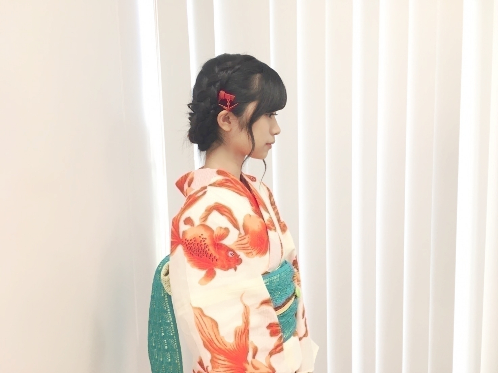
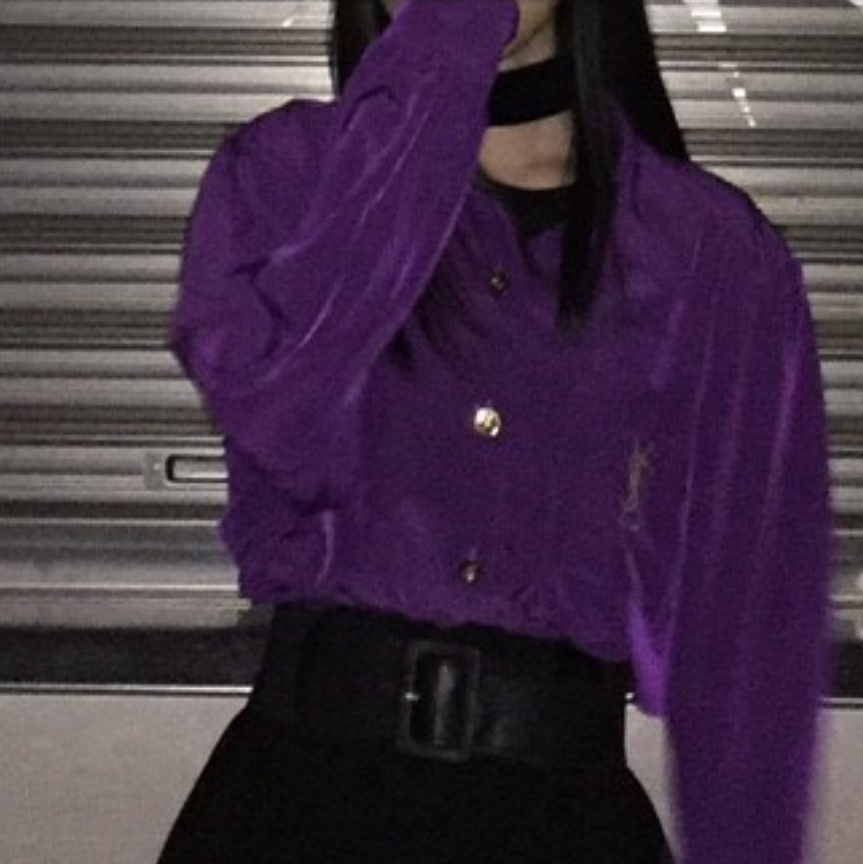
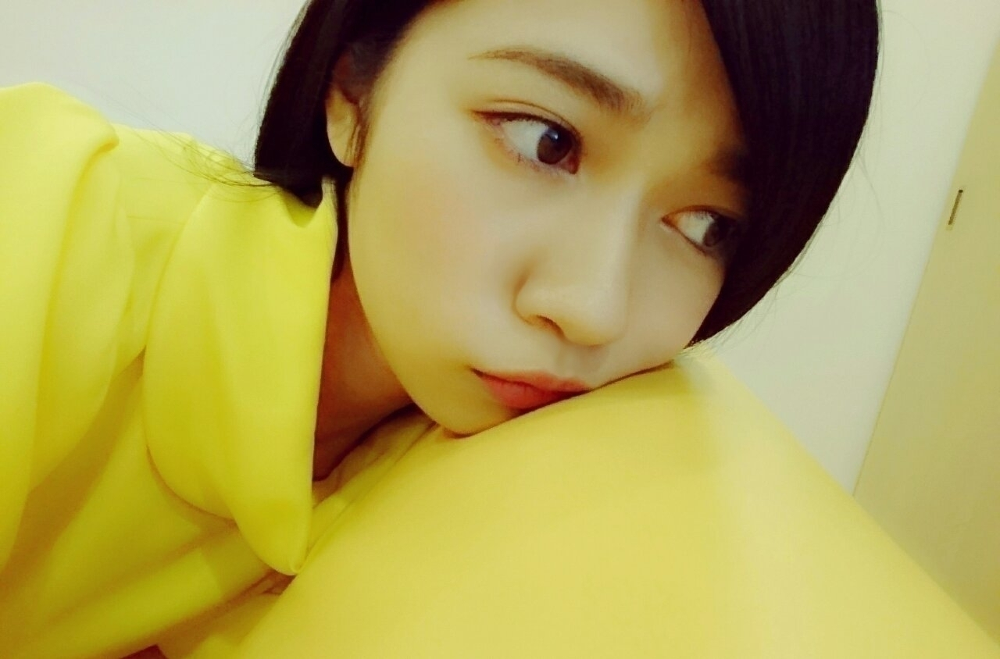
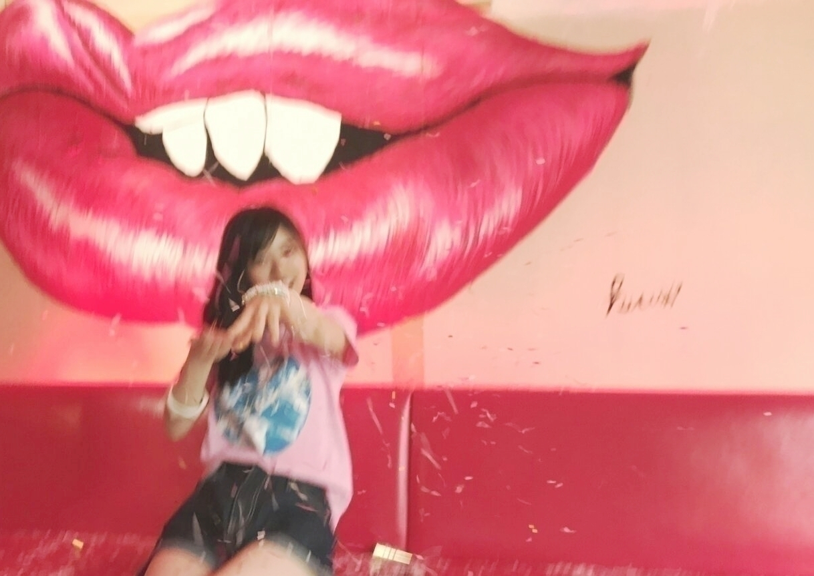
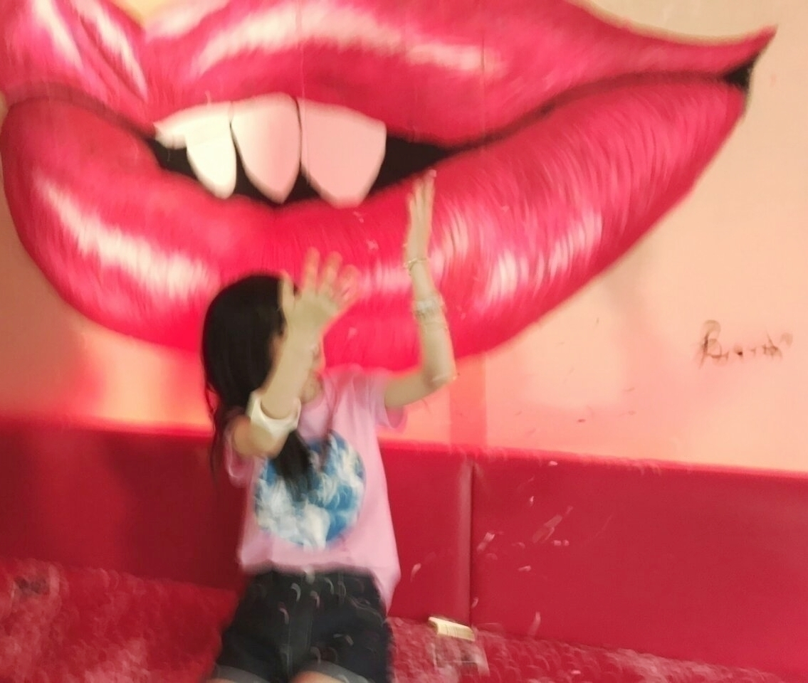
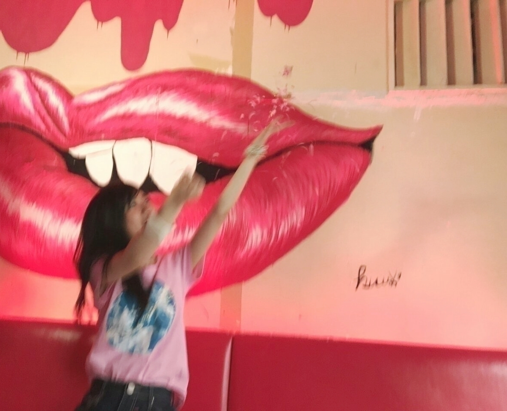
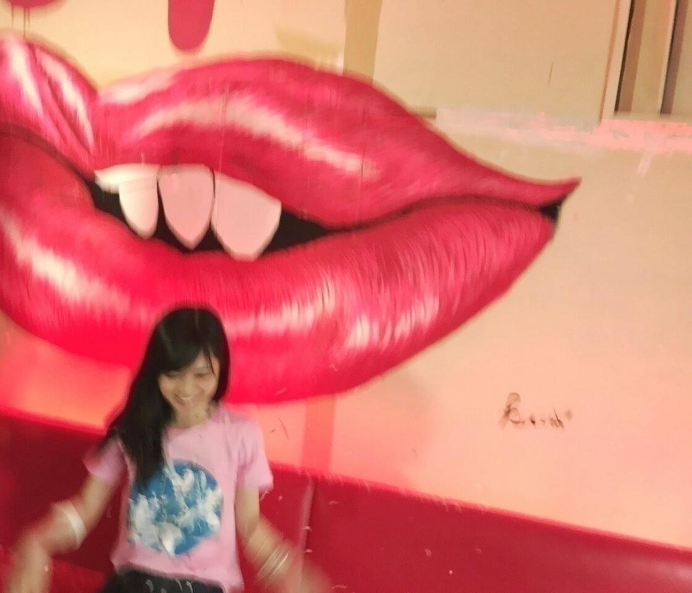
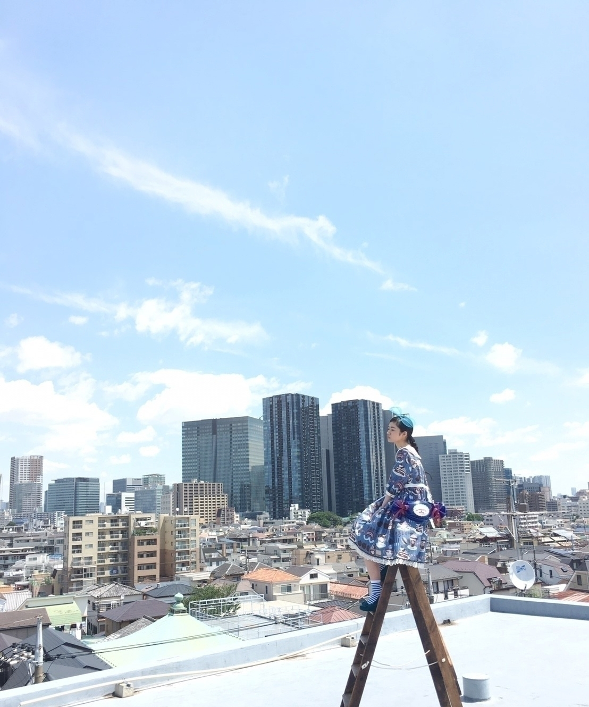
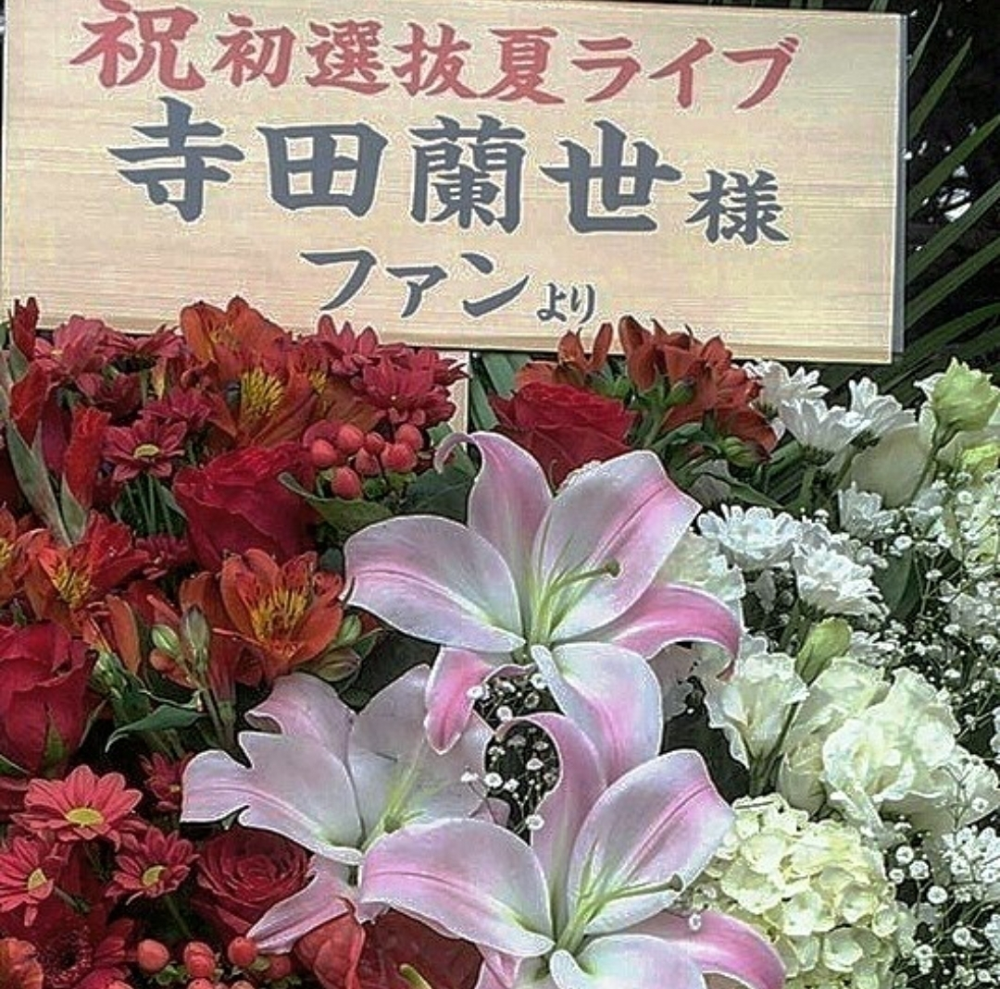
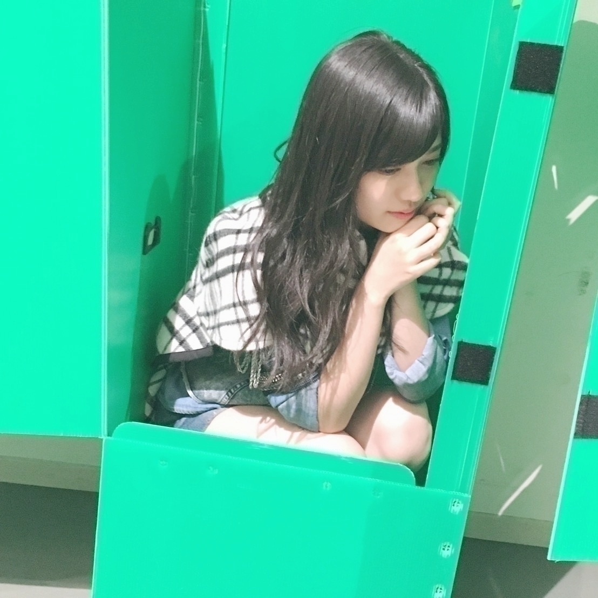

2017/0831Thuゴミクズワタボコリー
開運音楽堂で紹介した
平井堅さんのアルバム
歌バカ2をここ最近の移動時間はリピートしてます✴
平井堅さんの楽曲で一番好きなのは「告白」です
発売された当時はまだ
幼かったけど
それでも凄く惹かれる
吸い込まれるものがありました
このアルバムは沢山楽曲が入っているので今まで知らなかった凄くいい楽曲が
沢山知れて良きです(^^)(^^)
おはようございます
こんにちは
こんばんは

8月31日
夏が終わってしまう
何だかんだ寂しい気持ちになるのは毎年の事
でも、秋が1番大好き。
ファッション大好きだし
ご飯も美味しいから一気に食欲増します。
ところでモバメって
見てくれてる方居ますか
モバイルメール
メンバーからメールが
届くのですが
昔、755とかshowroomとか
ブログも研究生時代は当番制だったときに
個性を唯一出せた場所でした
近々、また1日で
沢山送る日を作りたいなーと思ってます
知らない方も多いかもですが
昔、1日に50通メールした事があったんです(´`;)
今考えると
迷惑メール以上ですよね(´`;)
でも、それがきっかけになる事もありました
人生何処で何があるか
わからないもの(´`;)
だから、自分の事
今できる事は
このブログで
もっと私はこれが好きなんだーって発信していこうと思いました
いつもコメント楽しく読んでます
ありがとうございます✴

黒髪もいいなって思えた
写真ー(..)
では、きっとまた
2017/0823Wedﾔｷﾄﾘｰ!
大阪に行ったら
ユニバさんにお邪魔したい
大阪の古着屋さんも行きたい
大阪まで行ったなら
兵庫まで行って宝塚まで行きたい
今回長期間大阪に居たので
こんな夢を(´`;)
大阪でのライブは
いつも盛り上がる
それと、何年か大阪城ホールでやらせて頂いてますが
乃木坂46がちゃんと成長しているんだなって実感できます
皆が頑張っている事に
気付いて付いてきてくれる方が増えたんだー✴
今ある現状は当たり前の事ではない
だから、もう少し頑張ろうって思えます
まだまだライブは続きます
今回のライブは
1番感情を表すのが
難しいです
だけど、笑うも泣くも
自分も人間だから
素直に出したいです
でも、夏のツアー
夏みたいにわーいわーいってするの恥ずかしくて出来ないタイプだけど
夏曲はねー✴
新潟公演はもう秋なのか
私の大好きな秋✴
嬉しいお知らせー
フェットチーネCM第2弾✴
本当に有り難い
今回の撮影は見た目によらず体力勝負でした
腹筋を使いまくりました
トランポリンやワイヤーを使ったり
どれも凄く楽しかったです✴
前回に引き続き
真夏さん
ひなちまさん
西野さん
皆、優しいお姉さん
今回もブルボンさんのお菓子沢山食べて、優しいスタッフさんメンバーとCM撮影幸せな時間でした✴
ソファーも黄色だった
独特な世界観のCMになってます
宜しくお願い致します(..)

今年、かき氷食べてないかも(´`;)
皆さんは乃木坂46の夏のツアー以外で夏らしい事しましたか？
名古屋
宜しくお願い致します
ペンライトは赤と白です
タオル探します
8月もそろそろ終わり(´`;)
嬉しいような寂しいような
2017/0811Friﾁｰｽﾞﾉﾘﾏｷ
前回のブログ
たくさんのコメント
ありがとうございます!
今、読ませてもらってます
いつものブログのコメントよりも
熱くて文の長さや言葉
皆さんのそれぞれの
今、本当に思ってる事をぶつけて下さっている気がして嬉しかったです
私自身も言葉足らずで
いつも直感と感情をストレートに真っ直ぐ投げてしまうので
本当の気持ちを伝えるのが幼い頃から下手くそで
今もこの性格は
相変わらずなのですが
まだ皆さんになかなか
見てもらえてない
色んな面をみてもらって
らんぜってこういう人間なんだーって
感じてもらえればいいかなって今は思ってます!
影響力のあるお仕事を
させてもらっている以上
自分の軸は振らさず
いきたいと考えています!
おはようございます
こんにちは
こんばんは
逃げ水発売✴
･ジャケ写
･乃木坂でお馴染みのカフェ
･夏らしいTシャツに短パン
･ふともも(´`;)

最近携帯の充電の減りが
早いのは
モバメを見て下さってる方なら恒例の話ですよね
（ぜひ、気になる方はモバメチェックしていただければ!）
そう、充電の減りが早いのでモバイルバッテリーを買いに電気屋さんへ行きました!
そこで観光で日本に来ていた外国人の方が
キャラクターの柄のついたモバイルバッテリーを指差し
「君のモバイルバッテリーナイスですねー」
みたいな事を話しかけられて
寺「同じ商品を買うならここにありますよー」
おそろいのものを紹介しました
外「これを買えば携帯の充電フルジャージできますか？」みたいな事を聞かれたので
寺「Yes,フルチャージ!!!Year」って言えました
英語の読み書きは全然出来ないけど
リスニング、会話は理解できる方だと思ってます
よく、町中で外国人の方に
道案内頼まれたりする事が昔から何故か多いです(´`;)
でも、こう言うコミュニケーションは嬉しい!!!
その日は他にも
私が道で迷子になっている所日本の方が親切に
道案内して下さいました‼
こう言う幸せって素敵だなーって思えました(^^)
助け合いー(^^)



showroom前向きに検討してます
頭の文にも書いたとおり
もっとオフモードの私を
出せる機会って今まで無かったので
ライブの自分
乃木中の自分
ブログの自分
モバメの自分
雑誌の自分
その他、、、私
全部自分だけど
ゆるく喋ってる私を出す機会ってそう振り返ってみれば無かったなーって
ただ、本当にパスワード何だったっけ(´`;)
機械音痴過ぎるので
アプリダウンロードとかする際のパスワード記入して下さいとか見るといつも焦るんです、、、(´`;)
機械の使えるメンバーや
もうshowroom経験した子達に聞いて
良きタイミングがあれば
いつかやってみようかなーって感じです
１人でトークするのは
どんなものなのかな
以前、れなちのshowroomに絢音ちゃんと飛び入り参加で私も短い時間ではありましたが凄く楽屋の私を見せれたので、、、(´`;)
ブログや乃木中、ライブだけでは伝わりきらない
自分を皆さんに伝えたいなーって
その際はぜひお付き合いしてくれると喜びます(..)✴
タイムテーブル?の出し方も誰かに教わって
できるだけ前もって告知できるようにしたいと考えてます
これからも
こんな私ではありますが
宜しくお願い致します✴
乃木中お弁当企画
お弁当箱に入りきらなかったもの
チーズのりまきは
海苔を四角くカット
チーズを
真四角なものを用意
レンジで10秒程度温め
クルクルと巻くだけ
ぜひ、お試しあれ‼
まずは、LIVE✴
仙台では萩の月とずんだ餅、凍天が大好き
去年はずんだシェイクを始めて飲んで幸せでした(^^)
ペンライトカラーは
紅白です
赤と白です
ぜひ、楽しみましょう(^^)
水分補給はこまめにね
2017/0805SatmeltKAWAIIFASHIONBOOKさんこの事については書きます、すごく嬉しかったですこれからも私のスタイルを貫きます宜しくお願い致します！
どう伝えればいいか文にするのは難しく遅くなりました。
よかったら読んで下さい。
私には登れる力があると思われたから
ここに連れて来られたんだと思います。
他の人じゃ出来無いからだと思います。
でも、これからの私
今まで必死に我武者羅に
歩んできた道
考えれば考える程
言葉では表せないものがありました。
第一に一緒に目標に向かって歩んでくれている
ファンの人の気持ちを考えると胸が痛くなりました。
壊れる寸前だとしても
己を信じないと
付いて来て下さる
一緒に進んでくれている
ファンで居てくれる方の為にも
今までの自分の為にも
これからの自分の為にも
私には今までの歩みがあるから大丈夫だと信じてます
頑張ってる人に「頑張れ」って声は優しさにはならないかもしれません。
でも、「頑張って」欲しいって言われるって事は
「期待」されてる証拠
その人に思い入れがあるから掛ける言葉だと
今回学びました。
何も思わない人に
この言葉はかけない。
少し前の私は
もっと悪い方向に
ネガティブでしたが
周りの人が
プラスな声を沢山かけてくれるようになり
いい意味で少しずつ
自分を認めてあげれるようになりました
これは、私がしっかり真っ直ぐ歩いてきた何よりの証拠です
今シングルはアンダーでイベントやアルバムがあるそうなので
乃木坂46の歴史に名を刻む今までのアンダーの中で最も大切な期間だと思います。
そのタイミング
意味があってここに居ろと言われたんだと思っています。
でも、もちろん
納得してませんよ。
できません。
私が1番納得できません。
正直に物事に当たっていきたいです。
それって凄く大変です。
もっと利口な生き方もあると思うんです。
でも、私は自分の考え方、思考、想いを大切にしたいです。
自分でも大変な道選んでるなとか
なんて、不器用なんだって悩む事もたくさんありましたが
私の気持ちに賛成してくださるファンの方からいる限り
私は強く気持ちを持っていなきゃいけないと思いました。
一緒に今シングルは
駆け上がりたいです。
過去決まった事は変えられないから
近い未来を変えたい
やっぱり私は常に上に居たい人間です。
絶対、
後悔させてやりましょう
流されるのでなく
自分の意見、思いはしっかり言える人でいたいです
そしたら皆で変えられる
変わる未来ってあると思う
少しでも何か思う事があるなら
ここで折れるのは凄く簡単です
でも折れたら
逃げたら
すべての努力が 水の泡
今回が 最終関門
試されてると思い
今まで通り
気取らず
飾らず
力強く
前向きに
一直線目指して
歩いていきます
このシングルで
皆さんと一緒に
見せつけましょう
色んな意味で楽しい夏にしましょうね

Meltさん！
またブログ書きます!

いつもお花ありがとう
ございます！
お花大好きだから嬉しいです!
衣装ケースの中へ

アルバム個別握手会
ありがとうございました！
ブログ遅くなってごめんなさい
ファンの皆さんと
自分の気持ちって
共有しあってるんだなと思いました
これからも
変わらぬ関係で！
衣装は新鮮ですよね
外で撮影
風が強く前髪が
手に持っているのはフランクフルトです！
自分に満足、納得するのは
きっと私の人生が終わるとき
これで良かったんだって
最後に
笑える生き方を
今は日々追い求めていたいです。
寺田蘭世
乃木坂46
2017/08/05 17:00｜個別ページ｜コメント(1172)